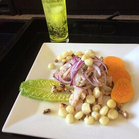

This ceviche is the best you will ever have. It is from Peru
Ingredients
- 2 potatoes
- 2 sweet potatoes
- 1 red onion, cut into thin strips
- 1 cup fresh lime juice
- ½ stalk celery, sliced
- ¼ cup lightly packed cilantro leaves
- 1 pinch ground cumin
- 1 clove garlic, minced
- 1 habanero pepper, seeded and minced
- Salt and freshly ground pepper to taste
- 1 pound fresh tilapia, cut into 1/2-inch pieces
- 1 pound medium shrimp - peeled, deveined, and cut into 1/2-inch pieces
- 1 bibb or Boston lettuce, separated into leaves
Steps
- Place the potatoes and sweet potatoes in a saucepan and cover with water. Simmer until the potatoes are easily pierced with a fork, then drain, and set aside to cool to room temperature. Place the sliced onion in a bowl of warm water, let stand 10 minutes, then drain and set aside.
- Meanwhile, place the lime juice, celery, cilantro, and cumin into the bowl of a blender, and puree until smooth. Pour this mixture into a large glass bowl, and stir in the garlic and habanero pepper. Season with salt and pepper, then stir in the diced tilapia and shrimp.
- Set aside to marinate for an hour, stirring occasionally. The seafood is done once it turns firm and opaque.
- To serve, peel the potatoes and cut into slices. Stir the onions into the fish mixture. Line serving bowls with lettuce leaves. Spoon the ceviche with its juice into the bowls and garnish with slices of potato.
Nutrition facts of ceviche
- Calories from Fat 24. Calories 165.
- 4% Total Fat 2.7g.
- 5% Saturated Fat 0.9g.
- 25% Cholesterol 76mg.
- 36% Sodium 872mg.
- 17% Potassium 608mg.
- 2% Total Carbohydrates 5.3g.